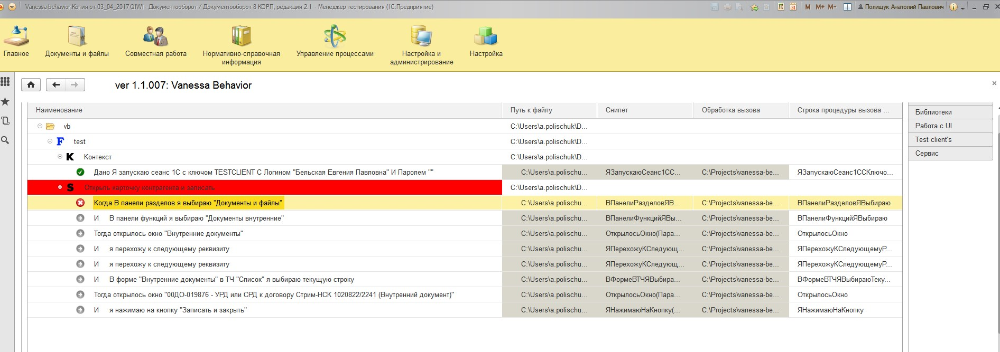

При подключении к тест-клиенту под конкретным пользователем возникает ошибка перехода к следующему шагу.

13.04.2017 10:45:26 {ВнешняяОбработка.РаботаСИнтерфейсом.Форма.Форма.Форма(2701)}: Поле объекта не обнаружено (ГлавноеОкноТестируемого); ИмяФайла=C:\Projects\vanessa-behavior\features\Libraries\UITestRunner\step_definitions\РаботаСИнтерфейсом.epf, ИмяПроцедуры=ВПанелиРазделовЯВыбираю, версия VB=ver 1.1.007, версия платформы=8.3.9.1850, режим совместимости=Версия8_3_8